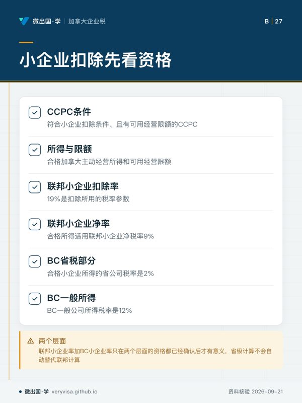
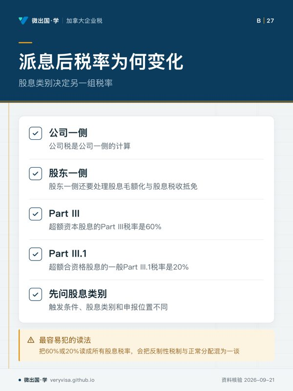

核实日期：2026-09-08｜本页口径：2026 税年公司税的现行分层。税率须先判断所得性质、公司资格与可用扣除，再进入联邦和省级计算；下一次复核：2027-01-31。
公司税率表最容易被读成一张「看到公司就套一个百分比」的答案。实际申报不是这样。公司先有 Part I 的基本税，再看联邦减免、小企业扣除、所得是不是符合小企业条件，最后还要把省税层叠加。若公司向股东派息，股息又有另一套 Part III 与 Part III.1 的制度，不能把公司缴过的税率直接当成股东的个人税率。
这页的任务不是给出一个万能数字，而是建立一条不会跳步的路线：先识别税层，再识别资格，最后才读具体数值。这里的数字都来自本页所列知识单元；它们是 2026 税年的已核实快照，不替代对下一年度官方页面的复核。
一、先问「哪一层税」，不要先问「税率是多少」
1.1 Part I 是入口，不是最终答案
公司 Part I 基本率是 38%。这个数说明税法从什么基准开始计算，并不表示每一家公司最后都把应税所得乘以它。联邦减免之后，Part I 的税率层变成 28%；之后还要继续检查一般减税、小企业扣除以及其他适用调整。28% 不是所有公司的最终税率，也不是「公司税」这三个字的同义词。
因此，拿到一张公司的财务资料时，第一步不是把会计利润乘上 38% 或 28%。第一步应当把会计上的利润转换成税法上的应税所得，再把应税所得按性质分桶。相同公司在同一税年可能同时有主动经营所得、投资所得和其他特别所得；每个桶都可能进入不同的扣除或税率路径。
1.2 一般公司所得的联邦层
符合联邦一般减税的公司，一般公司净税率为 15%。这个 15% 是联邦净税率，省税仍要另算。它不能不加区分地套在小企业所得、投资所得或特别所得上，也不能因为公司注册地在某省，就把联邦的 15% 当成合并税率。
这里有两个常见的方向错误。第一，把 15% 与 Part I 扣除前的 38% 混在一起；第二，把联邦 15% 当成公司已经完成全部税务计算。正确读法是：38% 是基本入口，28% 是联邦抵免后的层，15% 是符合一般减税条件后的联邦净层；它们回答的是不同步骤的问题。
二、小企业扣除不是「小公司自动优惠」
2.1 资格先于百分比
符合小企业扣除条件、且有可用经营限额的 CCPC，其合格所得适用联邦小企业净税率 9%。这不是所有公司的统一税率，也不是看公司员工人数或营业额名称就能决定的数字。要先判断公司是不是符合条件的 CCPC，再判断所得是不是合格加拿大主动经营所得，最后才看经营限额是否足够。
联邦小企业扣除率是 19%。扣除基数不是随意挑出来的利润，而要同时考虑合格加拿大主动经营所得、应税所得和可用经营限额等法定限制。换句话说，9% 是在正确完成资格和扣除计算后的联邦净结果；19% 是扣除所用的税率参数。二者不能互换，也不能把 19% 当作公司最后实际缴纳的税率。
2.2 BC 层要独立重做判断
在 BC，合格小企业所得的省公司税率是 2%。联邦税另算；超过小企业范围或不符合小企业条件的所得，不能继续使用这个低率。BC 一般公司所得税率是 12%，它同样只是省税部分，不能与联邦一般净税率 15% 混为一个税种。
这解释了为什么「联邦小企业率加 BC 小企业率」只在两个层面的资格都已经确认后才有意义。省级计算并不会自动替代联邦计算；公司也不能仅因某一笔收入在 BC 发生，就跳过 CCPC、主动经营所得或限额分析。省税和联邦税是两条相互衔接、但不能互相代替的路径。
三、用一个判定顺序防止套错率
实务上可以把顺序固定为四问。第一，公司的法律和税务身份是什么，是否是 CCPC。第二，收入是一般公司所得、合格主动经营所得、投资所得，还是特别规则覆盖的所得。第三，联邦小企业扣除的基数与经营限额是否足够。第四，BC 省级低率或一般率的条件是否成立。
每一问都要保留判断记录。比如，一家公司可以符合 CCPC 身份，却有一部分收入不属于合格主动经营所得；也可以有合格所得，却因为可用限额已经被关联公司分享而不能把全部所得放进低率层。公司身份、所得性质、限额和税率是四个不同概念。
四、派息后为什么还会出现另一组税率
公司税是公司一侧的计算；公司把利润以股息分给个人股东后，股东一侧还要处理股息毛额化与股息税收抵免。对公司来说，超额资本股息的 Part III 税率是 60%；超额合资格股息的一般 Part III.1 税率是 20%。这两个数不是一般公司税率，也不是股东个人收到普通股息时直接相乘的税率。
Part III 与 Part III.1 的触发条件、股息类别和申报位置不同。看到「股息」时，应先问它属于哪一种股息、公司有没有相应账户或选择、是否已经超过制度允许的范围。把 60% 或 20% 读成「所有股息税率」，会把反制性税制与正常分配混为一谈。
五、考试口径与实务口径怎么并列读
考试口径通常先用几张概览表帮助学习者记住 38%、28%、15%、9%、2% 和 12% 的层次。考试题可能要求辨认哪个数字对应哪一层。实务上则必须回到 2026 年适用条件：数字是已核实快照，资格、所得性质、限额和省份仍要逐项确认。
因此，遇到这套口径把「公司税率」写成一个简短结论时，考试口径可以按它的分类作答；实务口径必须把联邦基本率、抵免后层、一般净率、小企业扣除、BC 省级层和股息反制层拆开。两者不矛盾，而是问题不同：前者考分类，后者防止把一个分类当成最终账单。
六、把税率地图落到工作底稿
建议在工作底稿中分出联邦栏、BC 栏、所得类型栏、资格栏和证据栏。联邦栏记录从 38% 到 28% 再到 15% 或 9% 的路径；BC 栏记录 2% 或 12% 的省级路径；所得类型栏说明为什么进入一般或小企业路径；资格栏写 CCPC、主动经营所得和限额结论；证据栏写本页所用知识单元及其 TWS。
这样做的价值不只是算出一个数。下一次税率更新时，可以知道是哪个层变化；如果 CRA 的概览页与法规或另一份官方页出现时间差，也能先定位冲突发生在基本率、扣除、资格还是省税，而不是整页推倒重来。
七、记忆卡：看到数字时要说出它的名词
38% 是公司 Part I 基本率；28% 是联邦抵免后的层；15% 是符合一般减税后的联邦净税率；9% 是符合条件的 CCPC 合格所得的联邦小企业净税率；19% 是联邦小企业扣除率；2% 是 BC 合格小企业所得的省税率；12% 是 BC 一般公司所得的省税率；60% 和 20% 属于特定股息反制税层。先说名词，再说数字，最后说条件，比背一串百分比更不容易错。
八、从账面利润到税率层的复核动作
拿到一份公司的损益表时，先不要在净利润旁边写一个估计税额。先把收入按来源拆开，再把不可扣除项目、资本项目和会计与税法之间的调整列出。税率只适用于完成这些调整后的税务分类，而不是未经调整的会计结果。这个顺序也能提醒读者：公司的现金余额、会计利润和应税所得是三个不同对象。
接着检查公司是否处在一个会改变税率层的状态。例如公司可能在年中改变股权，或开始与另一家企业共同经营；也可能把主动经营所得和投资所得放在同一个银行账户。银行账户的混合不改变所得的法律分类，但会增加追踪难度。底稿应把事实、分类和采用税率分栏，避免在最后一步才发现原始资料不足。
最后，把每一个百分比写成完整句子，而不是孤立数字。完整句子应包含适用主体、所得类别、联邦或省级范围以及税年。这样，审阅人可以判断你是在使用 15% 的联邦一般净层、9% 的联邦小企业净层，还是把 2% 的 BC 省级低率误当成合并税率。税率地图的目的不是让表格更复杂，而是让错误在进入申报表前就暴露。
本页知识卡
不看正文也能拿到这一节的核心内容：先看导读，再看图。点图放大，左右翻页。
- 先看先看税率层，抓住入口与最终答案
- 易漏省税仍要另算，联邦15%不能当成合并税率
- 下一步去路线，带问题找持牌专业人士

- 先看先看CCPC条件，再看所得与限额
- 易漏9%不是所有公司的统一税率，须核对条件
- 下一步去知识卡，带问题找持牌专业人士

- 先看先看公司一侧和股东一侧
- 易漏60%或20%不是一般公司税率，须复核股息类别
- 下一步去讲解，带问题找持牌专业人士